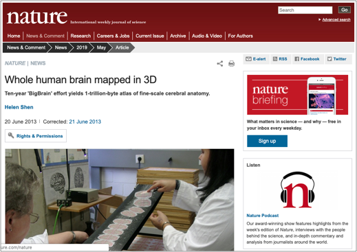

# BigBrain FAQ
Frequently asked questions about the BigBrain
-
Q:
What is the BigBrain
A: The BigBrain is the brain of a 65yo man with no known neurological or psychiatric diseases in clinical records at time of death. The brain was embedded in paraffin and sectioned in 7404 coronal histological sections (20 microns), stained for cell bodies. The BigBrain is the digitized reconstruction of the high-resolution histological sections (20 microns isotropic).
-
Q:
What are all the volumes listed in the table?
A: The volumes are represented in either stereotaxic space (MNI-ICBM152 or MNI-SYN24) or in native histological space. The stereotaxic registration is not perfect but it is very good. The templates for registration (ICBM152 and SYN24) are made available in those tables. The BigBrain volumes are offered at 100, 200, 300, 400 microns isotropic in both MINC (.mnc) and NIfTI (.nii) formats.
-
Q:
Why is the aligned BigBrain showing such strong asymmetry?
A: The asymmetry results from aligning the histology sections to the MRI of the brain taken after it was extracted from the skull and set in formalin. We do not have a post-mortem MRI of the undistorted brain inside the head.
-
Q:
The intensities are wrong in the NIfTI volumes. How can I view them correctly?
A: There was a problem with the initial data conversion to NIfTI format. The NIfTI volumes have been replaced on Sept 3, 2013. You will have to download the new volumes to view them in fslview, mricron or afni tools.
-
Q:
How can I download the MINC volumes? The files appear incomplete.
A: Your browser may be limiting the maximum size of the file to transfer. This is problematic for the 100-micron MINC volumes.
-
Q:
How can I view the MINC volumes?
A: MINC is an imaging format developed at the MNI. To obtain binaries (mostly Linux and OSX) of the MINC tools, download the MINC Tool Kit here. The viewers are called register and Display.
-
Q:
How do I view the volumes online?
A: The web-based viewer is TissueStack. Documentation is available at: http://www.tissuestack.org/. As you will soon discover, there is a limitation in the zoom factor in TissueStack.
-
Q:
How can I view the OBJ surfaces?
A: The OBJ surfaces are viewable in Brainbrowser, Surfstat (MATLAB-based) toolbox, Brain-view, or overlaid on the corresponding volume in Display, etc.
-
Q:
Is there an MRI of the BigBrain?
A: Yes, there is one of the fixed brain (removed from skull). It has an isotropic voxel size resolution of 0.444mm, and is available in the Raw_Data/MRI subdirectory. Note that the current version is in "processing space" with y-z axes flipped. A new one in proper histological space will be supplied soon.
-
Q:
How can I view the volumes as in the bigbrain videos?
A: The BigBrain videos were created using Atelier3D, a licensed software which is currently not distributed. The volume read in Atelier3D is at 20-micron isotropic, which is too big for file transfers. This is why reduced volumes at 100, 200, 300, 400 microns have been created.
-
Q:
Is there sound to the bigbrain videos?
A: No
-
Q:
Is there a way to mass-download the data files?
A: Yes. As of March 12th, 2014, all sections and volumes are available on an anonymous FTP server located at the same address as this site. We recommend connecting to the FTP server using a command line or GUI client (e.g., Filezilla), but not a web browser. % ftp bigbrain.loris.ca (enter anonymous as the username and your e-mail as the password) Use the command "ls" to list the contents, "cd" to change directory, "get" to download files.